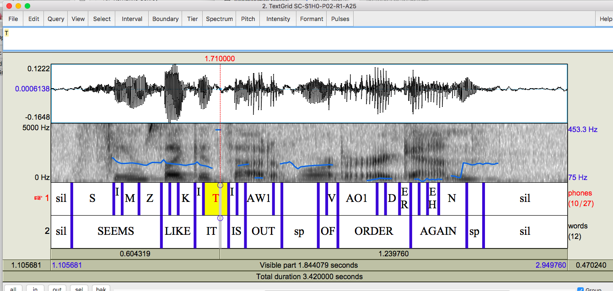

Karina Bercan's Blog
Check this page for weekly summaries of my individual work. My colleagues' pages are linked right below, as well as a link back to the team blog.
Project Blog | Emily's Blog | Sara's Blog
Table of Contents
Week 1: 9/4/16
During our first week, I mostly worked on administrative tasks to get our project going. I modified the website code from the 2015-2016 Simmons CREU group to fit our needs and project. I gave Emily and Sara a quick tutorial on how to make their own changes so they can upload their own weekly blogs and contribute to team blogs as needed. I also submitted paperwork to receive payment for my work.
Additionally, I refreshed my memory on the Intonation and Evidence description. I downloaded Praat, software we will use through the course of our research to record, markup, analyze speech. I familiarized myself with ToBI, the speech markup tutorial we will be using, as well, and begun to explore Festival speech synthesis.
Week 2: 9/11/16
I began the ToBI tutorial, which will be used to mark-up samples of speech. I listened to examples and learned these terms and mark-up rules:
- Tones
- H*: high pitch accent
- L*: low pitch accent
- L-L%: low phrase accent, low boundary tone
- H-H%: high phrase accent, high boundary tone
- Break indices
- 0: word boundary erased
- 1: typical inter-word disjuncture within a phrase
- 4: end of an intonational phrase
I also examined the differences among sound waves of the following classes of phonemes:
- vowels
- n, m, ng (sonorants)
- p, t, k, hard g, d b (stop consonants)
Week 3: 9/18/16
I worked through Chapter 2.4 on ToBI, and I started marking-up a radio news corpus. I realized I needed to do more practice with Praat and speech mark-up, so I tried some exercises on the ToBI tutorial page.
I also received a file with results from a sample taken of recording of different words, said with various prosodic changes. This file will have a script run on it in the near future to clean it up and see if there's a relationship among various elements.
Week 4: 9/25/16
I continued work on the ToBI tutorial and revisited marking-up an FM radio news paragraph reading to practice annotating. I paid close attention to concepts and examples that didn't make sense to me to get clarification from my team and advisor.
Week 5: 10/2/16
I finished marking-up the FM radio news piece. After discussing it with my team, I realized I did about half of it correctly, and now I have more clarification on ToBI annotation rules to go back and clean-up my work.
It is a challenge for me to annotate recordings. When I do the exercises on the ToBI tutorial, I know what specific boundary tones and pitch accents to look for, but when I'm working on a mixed piece, I can only rely on what I've learned in each chapter and try to identify exactly what I'm hearing without the guidance of a specific chapter topic.
Week 6: 10/9/16
I started writing a script with Python to parse a .TextGrid file into a .CSV.
.TextGrid is the text file behind the annotations we make on sound files in Praat. To compare each team member's annotations, we have to put it into a spreadsheet, but there is no easy way to do it. I wrote a program which reads one specified .TextGrid and successfully puts it in a spreadsheet.
Some challenges I had this week included copying information from a text file efficiently; handling cases where one word has at least one pitch accent and at least one boundary tone; and the usual bugs we run into while programming.
I still have to test my code on my teammates' .TextGrids to make sure it works for their annotations as well as mine, and I have to modify the code to create a new column for each person's mark-ups for easy comparison.
Week 7: 10/16/16
The Python program I finished last week worked on Sara's and Emily's .TextGrids, so I expanded the code to take at least one argument (file name for a .TextGrid) and parse each file into a cohesive spreadsheet. The programs and descriptions can be found on my GitHub in my IAI-Scripts repository.
To take arguments, I use from sys import argv. For regular expressions import re, and to write .CSV files import csv.
I create a TextGrid class which holds the name of the .TextGrid (the file name as a String) and a list for each tier in the .TextGrid--xmin, xmax, words, tones, breaks, and misc. Each TextGrid created is stored in a list called tg, though the very first item (index 0) is actually the script name.
In main(), I create a 2-dimensional list, which begins with the first three column names--xmin, xmax, and words. I also create variables which hold regular expression patterns used to parse each .TextGrid.
Then, we walk through each TextGrid in the list tg, skipping the first item (recall: tg[0] holds the name of the script, not the name of a file). We open each file by accessing the TextGrid's name property and walk it line by line, using our predefined regular expressions as check-points and filters. When appropriate, we append specific bits of information to the TextGrid's list properties, like words and tones. Once the file has been copied into the lists, the function lineUpTiers(tier, xmax) takes one of the lists and matches its mark-ups with the correct point in the sound file, using the first .TextGrid's word limits as the boundaries, so that each person's mark-ups align, when their word boundaries are fractions of a second off from each other's.
Finally, once we have read and lined up each .TextGrid, we add it to the 2-dimensional list in the right order, so it's easy to compare all the tones from each .TextGrid, all the break from each .TextGrid, etc... And of course, the .CSV file is written to from this list at the very end.
Remaining possible improvements include making lineUpTiers(tier,xmax) a part of TextGrid and adding functionality to pass in a folder in addition to an individual file.
Week 8: 10/23/16
I focused on writing a script that calculates how many agreeing labels each labeler has on each word.
The program takes one argument, a .csv made using the script I wrote last week called tgToCsv_v2.py. It walks through that file, calculating how many labelers there are based on the length of the spreadsheet, and it makes a copy of each person's tones column to compare.
In the function agreements(), on every word, each person's labels are compared to the labels of every person after itself. For example, if we have four labelers, the first person's is compared with the second, third, and fourth people's labels; the second's is compared with the third and fourth's; and the third's is compared with the fourth's labels. For each matching label, a point is added to the row.
In the first version of my program, I only compared existing labels. That is, if three people had only one label and the fourth person had two labels (a pitch accent and a boundary tone), there was no way to account for the difference in labels applied. They would just get a point for every match and the total possible points was simply the total possible matches given the submitted labels.
In the second version, as recommended by my advisor, each person's label cell is given two spots, a pitch accent and a boundary tone. Now, I am able to compare only the first spot in each cell with the next people's first spots, and the second spot with the next second spots. In the case that someone only puts down one label, their other spot is blank and is still compared. A blank spot can match another blank spot and count as a match.
More usage information and examples can be found on my GitHub.
Week 9: 10/30/16
I am shifting my focus to Festival, a speech synthesis system we hope to use to manipulate sound files. With Festival, our main goal is to adjust pitch accents on sound files to see if certain changes change the meaning of the phrases for participants.
This week, I tried to get started with Festival on my own machine to set up an environment where we could manipulate our sound files. The manual on Festival's website seems to be out of date so I was unable to install it, so I will continue to look for a solution next week.
Week 10: 11/6/16
I am very close to installing Festival, having found some forums that pointed me in the right direction. I am writing down my steps as I go for Festival-hopefuls in the future, but since I have not successfully installed it yet, I will post it next week.
I follow the Festival INSTALL files and the manual from the Festival website, but since those are out of date and convoluted for my purposes, it's been helpful to google my errors and see how others have been able to solve the same issues.
Week 11: 11/13/16
I looked for more solutions to install Fesitval, and I think I need to change my PATH in order to make it work. One of my classmates accidentally deleted her PATH variable trying to update it once, so I am seeking help from a professor in my department before moving forward.
Week 12: 11/20/16
I finally was able to install Fesitval! Here are the steps:
- Go to downloads on Festival's website
- Make sure you meet the system requirements
- I'm running on a Mac, which is a unix-like environment
- I have a C++ compiler, which I know because when I type gcc into a terminal window, it does not output "command not found"
- But I still need GNU Make
- Go here and scroll to the "Downloading Make" section
- Click on the main GNU FTP server and download the second to last file, version 4.2.
- Unpack this folder in your home directory **you can double click on the .tar.gz file to unpack it, but to make sure nothing goes wrong, I used command-line as walked through here.
- Type the following into the command-line:
cd make-4.2/
./configure
make
make install
make clean
**these instructions and more detail on installing GNU Make can be found in text file INSTALL
- Go to the US Festival site and click 'downloads' to be taken to an FTP index.
- In your home directory, make a folder to hold all your Festival downloads. I called mine `fest.`
- Download the following from the index above, and move them into `fest`, but be careful not to unpack until the next step.
- festival-2.4-release.tar.gz
- speech_tools-2.4-release.tar.gz
- festlex_CMU.tar.gz
- festlex_OALD.tar.gz
- festlex_POSLEX.tar.gz
- From the `voices` folder: festvox_kallpc16k.tar.gz and festvox_rablpc16k.tar.gz
- From festvox: festvox-2.7.0-release.tar.gz
- The documentation says to download a festdoc file, too, but I can't find it so we'll skip it.
- Unpack them all, using the method we used for GNU Make and making sure festival-2.4-release is done first.
- Open speech_tools/INSTALL and follow what it says:
- cd into speech_tools/ and type ./configure.
- Type the command gnumake. This takes a long time. Also, the documentation says you may need to use gmake if gnumake doesn't work.
- Type the command gnumake test. Again, you may need to use gmake test. At the end of the output, you get "Test OK" if it was installed correctly.
- Add speech_tolls/bin to your path. I did not do this myself, but I watched a professor do it, and it seems simple to accomplish. If you are nervous about doing this on your own, seek help!!!
- cd into festival/
- Type gnumake
- Type gnumake test
- This is the end! You should be able to run festival by typing src/main/festival in this directory.
Week 13: 11/27/16
I continued looking through the Festival manual to start learning how to use it for speech synthesis. I installed another voice package because Kall was a bit too primitive and didn't sound human enough. Even with the newer package I chose (they're all detailed in the manual), the voice is not human enough and may not be suitable for our study.
Over the next few weeks and over winter break I will work the team to make a decision about which system, Festival or Praat, we should use to synthesize speech/prosody.
Week 14: 12/4/16
This was our last week before finals and winter break. I will focus on trying to get good speech synthesis from Festival and determine if we need to use Praat for speech manipulation instead.
Week 15: 12/11/16
This is finals week! I had to take time off to focus on exams.
Week 16: 12/18/16
Winter break!
Week 17: 12/25/16
Merry Christmas and Happy Hanukkah!
Week 18: 1/1/17
Happy New Year!
Week 19: 1/8/17
Still on break.
Week 20: 1/15/17
Back on campus this week. We prepped for experiments for next week.
Week 21: 1/22/17
We ran experiments this week. The process went very smoothly and we are excited to start looking at data. We still need to run more participants next week.
Week 22: 1/29/17
We continued to run experiments.
Week 23: 2/5/17
This week I started cleaning up our data. I took the responsibility of chopping up the sound files for participants who were shown the experiment slides in order A. Because we recorded each subject's responses to the 36 stimuli in 3 distinct sound files, we have to go through each file and save the speech we need for our research. Each slide get its own file with a file name that specifies the scenario, how much the "listener" knows in that scenario, what number participant it is, what slide number it is, and what slide order it is. Then, we have to listen to each file again and save a corresponding .txt file with the text of their speech, noting if there were any unexpected pauses, stutters, etc...
I also inherited from Nanette a .praat script which ceates a pitch map for all the .wav and .TextGrid files in a folder. I looked through that to see what it did but will not run it or edit it until I'm done clenaing up the experiment sound files.
Week 24: 2/12/17
I finished chopping up the experiment sound files and was able to run the .praat script from last week. It's contents are on my GitHub. In the coming weeks, I will return to this to adapt it to fit our .TextGrid files to help with annotating.
This week I also looked at the Prosodylab-Aligner, software which lines-up a file of text with the words spoken in a .wav file and creates a corresponding .TextGrid. Basically, you supply the sound file and the words which were said, and the aligner marks the time where the word starts and ends along with the text of the word in Praat. I attempted to install it on my machine, but I'm not sure if I am mising a necessary component (having a problem with Xcode developer tools which I can't find a solution for). I am able to use the Prosodylab-Aligner, so I think it will work once I figure out the correct way to implement it. The tutorials available online may be outdated, so I am going to reach out to ZL, a student who works for Nanette's colleague Byron, and ask him about his experience using it. Hopefully, he can help me solve my problems.
Citation for the Prosodylab-Aligner: Gorman, Kyle, Jonathan Howell and Michael Wagner. 2011. Prosodylab-Aligner: A Tool for Forced Alignment of Laboratory Speech. Canadian Acoustics. 39.3. 192–193.
Week 25: 2/19/17
This week I attempted to fix my problem installing Prosodylab-Aligner. As mentioned last week, I was getting an error about a missing symbol tied to an outdated version of xcode, the Apple IDE. I don't know what a symbol is and I don't know why I needed that specific "symbol" to carry out my installation.
I did the only thing I know how to do--I copy and pasted the error message into Google, and I found that many people who got the error were trying to install Ruby. An example is this thread. The fix for these developers was simply to update "developer tools" on xcode, but my version claimed to be updated. After trying to update xcode and then uninstall and re-install it countless times, I decided to try to download Ruby and see if I could find the problem there.
I used Homebrew to install Ruby, and after getting errors with that, I was led to believe there was a problem with Homebrew. Investigating that, I ended up deleting a bunch of files that brew doctor brought to my attention. I don't think that really did anything, but it did help me clear non-brew installed Python files (3 versions of Python!!!) out of my system (maybe, probably). So I picked up where I left off on my Prosodylab-Aligner installation, but I got the same error message.
I found an email thread which suggested downloading the developer tools from xcode that I needed from the Apple downloads site. I found the most recent developer tools package, downloaded, and tried to run it, but got an error that I needed the most recent version of OS X, a version of Sierra. That was a breakthrough. I had assumed I had to most recent OS because my Mac is very annoying about updating, but when I went to the App Store, I found that I could install the new Sierra. That took close to an hour to download and install, but when I logged back on, I was able to install Prosodylab-Aligner!...Almost.
I started having a problem with pip, which is a tool for installing Python packages. After running pip install --upgrade pip I found that I did have the most recent version, so I looked at the output from the command that gave me a problem, pip3 install -r requirements.txt. Recall: these Prosodylab-Aligner instructions for Mac and Linux are here. There seemed to be a problem building something called Scipy, so per StackOverflow, I tried sudo pip3 install scipy to no avail--my terminal yelled at me that I didn't have permissions for this. I tried another suggestion, brew install gcc. That took approximately 100 years.
Since that multi-hour process, I haven't made more progress on the installation.
Week 26: 2/26/17
At last, my installation of Prosodylab-Aligner works! I struggled with it a bit more until I took a look at a file in its directory called "requirements.txt." I double checked to make sure I had what it required and realized I didn't have numpy. This link was helpful for installing the packages I needed. Then I went back and tried Prosodylab-Aligner again.
The way to use it once you've installed it, cd into its directory. Then, you can type something like python3 -m aligner -a /Users/Karina/Documents/CREU/Spring2017_recordings/test where /Users/Karina/Documents/CREU/Spring2017_recordings/test is the directory of your own files to be aligned, including the .wav file and the .lab file, which is just a text file (in all caps) of the words said.
If you get something about a file named OOV.txt being created, that just means the words you used in your .lab file don't exist in Prosodylab-aligner's dictionary. This is what happened to me. I actually think that was the only problem, and that I suffered with all the rest I wrote about because I didn't really look into that. Come to find out, your .lab file needs to be in all uppercase, and even contractions (like "it's") can't be used.
In any case, it works! See here: 
Back to the top